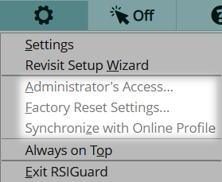
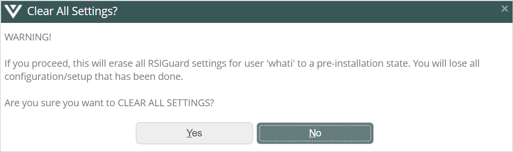
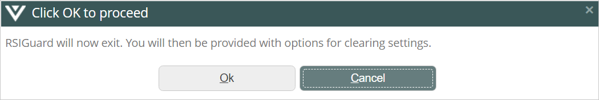
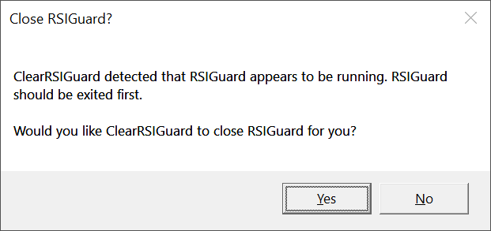
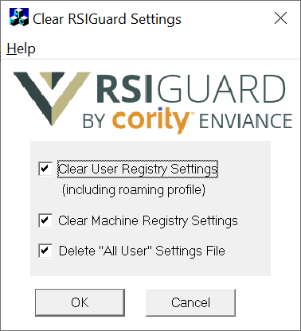
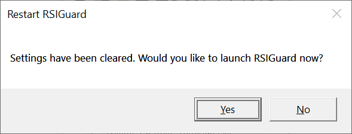

The Tools menu of the main RSIGuard window (pictured below) allows you to configure RSIGuard, use RSIScript to automate tasks, set the RSIGuard window to be on the top of all open windows, or exit RSIguard. There may be additional or fewer items in this menu if your organization has customized RSIGuard. To open the menu, click Tool or press Alt+T.
Settings
Visit the RSIGuard Settings. Settings are the central place where you can customize RSIGuard to your specific situation. It's important to visit Settings occasionally to make sure you are getting the most out of RSIGuard.
Run RSIScript
RSIScript is a programming language that lets you control RSIGuard and control your computer. Learning how to use this feature opens up a variety of options. From the command line, you can enter commands or launch text scripts. RSIScripts can also be associated with hotkeys in theKeyControl settings screen. Click here for more information about RSIScripts.
Revisit Setup Wizard
The Setup Wizard helps introduce the features of RSIGuard to you and lets you make basic configuration choices. You can return to the wizard via this menu item.
Always on Top
If selected, this item keeps RSIGuard on top of other windows so you can always access the RSIGuard user interface, even when working in other applications.
Exit RSIGuard
This exits RSIGuard (stopping all RSIGuard features from functioning until RSIGuard is run again).
Advanced Tools Access
Some additional functions are available in the Tools menu if you hold the CTRL key while clicking on Tools . The specific items will vary based on your configuration and use of other Cority products like OES. Here are 3 additional menu options:

Administrator's Access
Press CTRL, click Tools, and select Administrator's access. Enter your organization administrator's access code to enable access to additional RSIGuard settings/UI.
Factory Reset Settings
Choose this option to clear all RSIGuard settings back to the default settings you had after installation. Press CTRL, click Tools, and select Factory Reset Settings. You will then see:

If you are sure you want to delete settings, click Yes and you will see:

Click OK if you wish to proceed.
Click Yes if you see this screen (you might not):

You will see this screen:

Normally, you'd leave all 3 boxes checked and click OK to clear settings. After settings are cleared, you will see:

If you want to restart RSIGuard now, click Yes.
Synchronize with Online Profile
Normally RSIGuard synchronizes with Cority OES once daily. This forces synchronization to happen immediately rather than waiting until the next day's connection.
 menu of the main RSIGuard window (pictured below) allows you to configure RSIGuard, use RSIScript to automate tasks, set the RSIGuard window to be on the top of all open windows, or exit RSIguard. There may be additional or fewer items in this menu if your organization has customized RSIGuard. To open the menu, click Tool
menu of the main RSIGuard window (pictured below) allows you to configure RSIGuard, use RSIScript to automate tasks, set the RSIGuard window to be on the top of all open windows, or exit RSIguard. There may be additional or fewer items in this menu if your organization has customized RSIGuard. To open the menu, click Tool